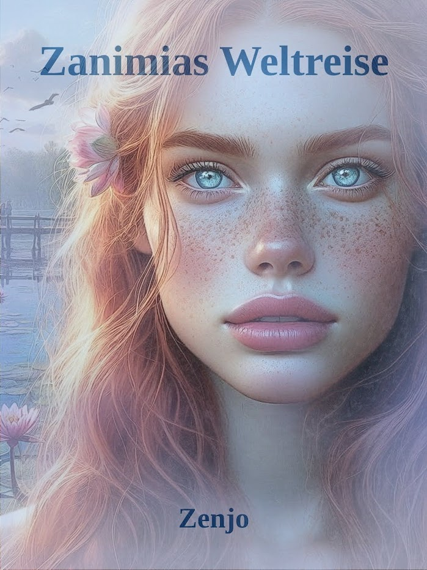
Zanimia war eine junge rothaarige Frau, die schon immer von einer Weltreise geträumt hatte.
Sie stand am Bug des Schiffes und sog die salzige Luft tief ein. Die Sonne strahlte warm auf ihr Gesicht, und der Wind spielte mit ihren Haaren. Vor ihr erstreckte sich das unendliche Meer, ein Symbol für die Abenteuer, die sie erwarteten.
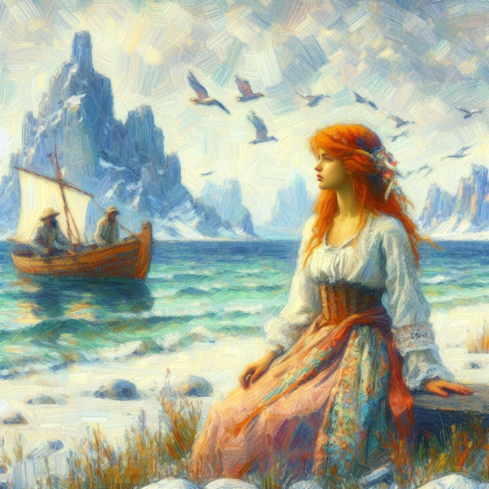
Zanimia war schon immer fasziniert von anderen Kulturen und fremden Ländern. Seit ihrer Kindheit träumte sie davon, die Welt zu bereisen und neue Erfahrungen zu sammeln. Jetzt, mit 21 Jahren, hatte sie endlich ihren Traum wahr gemacht. Sie hatte ihr Studium abgeschlossen. Sie sparte lange Zeit, um sich diesen Traum zu erfüllen, und kaufte schließlich ein Ticket für eine Kreuzfahrt, die sie zu verschiedenen Orten auf der ganzen Welt bringen würde. Sie war sehr aufgeregt, neue Kulturen, Landschaften und Menschen zu erkunden.
Sie liebte es, zu malen,
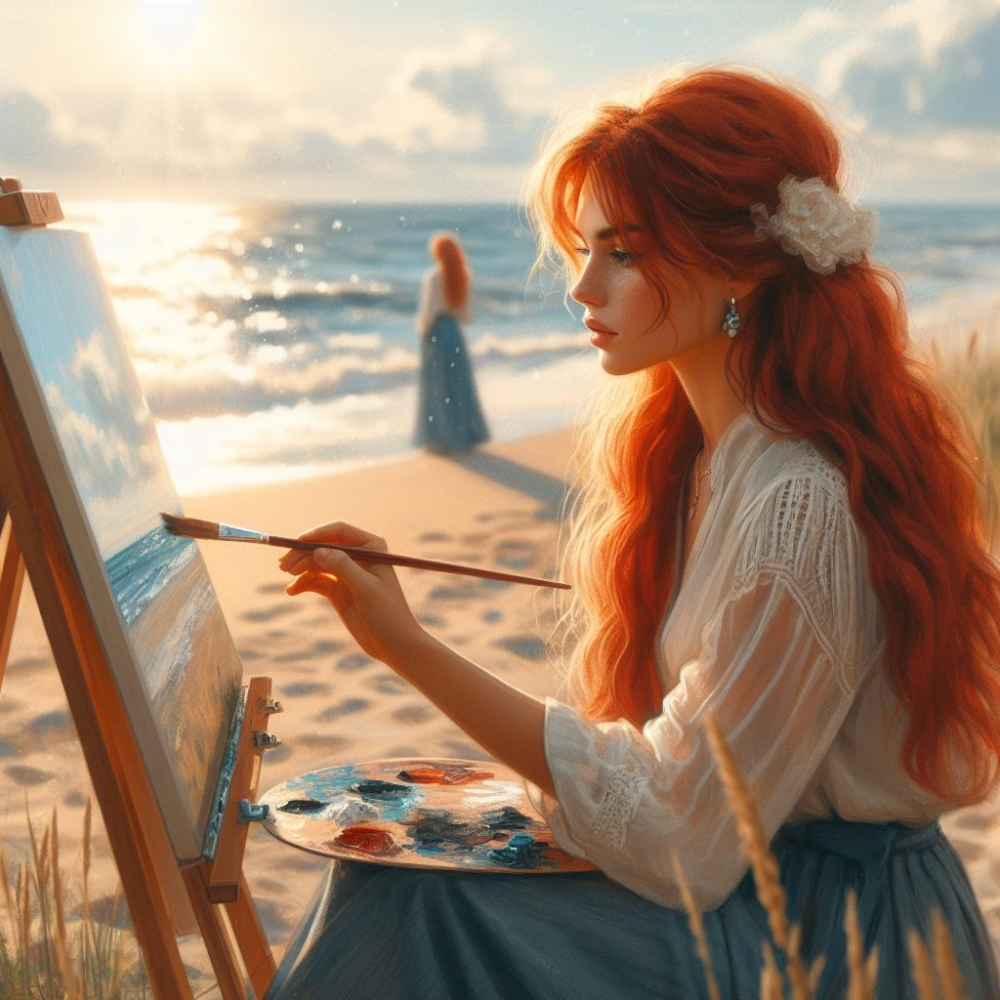
zu fotografieren
und spielte gerne Schach.
… Und Reisen !!!
Die Reise begann in Europa, wo Zanimia die Schönheit von Paris, Rom, Barcelona und anderen Städten bewunderte. Sie genoss die Kunst, die Architektur, das Essen und die Musik dieser Orte. Sie machte viele Fotos und schrieb in ihr Tagebuch über ihre Erlebnisse.
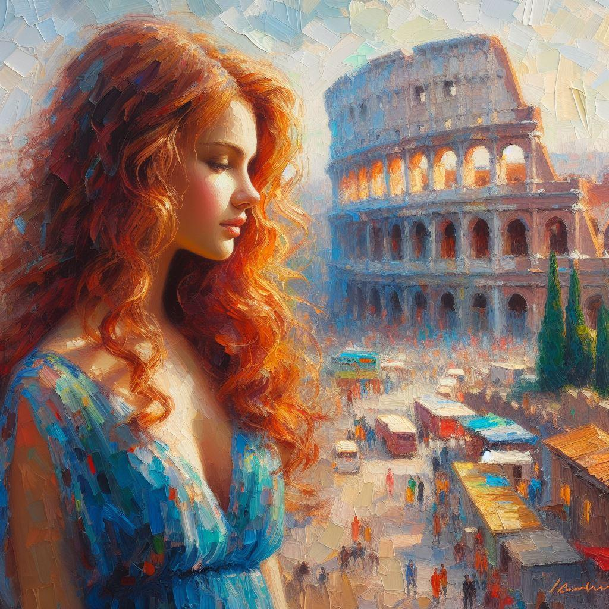
Dann fuhr das Schiff nach Afrika, wo Zanimia die Vielfalt von Natur, Tieren und Menschen entdeckte. Sie besuchte einen Nationalpark, wo sie Löwen, Elefanten, Giraffen und andere wilde Tiere aus nächster Nähe sah.
Sie besuchte auch ein Dorf, wo sie die Gastfreundschaft, die Traditionen und die Lebensweise der Einheimischen kennenlernte. Sie half ihnen bei der Ernte, dem Kochen und dem Tanzen. Sie fühlte sich sehr verbunden mit diesen Menschen, die so anders waren als sie, aber auch so ähnlich.
Weiter ging es nach Asien, wo Zanimia die Exotik von Indien, China, Japan und anderen Ländern erlebte. Sie war fasziniert von der Religion, der Philosophie, der Geschichte und der Kultur dieser Orte. Sie besuchte Tempel, Paläste, Märkte und Gärten. Sie lernte Yoga, Meditation, Tai Chi und andere Praktiken, die ihr Körper und Geist entspannten. Sie probierte verschiedene Gewürze, Tees, Süßigkeiten und andere Köstlichkeiten, die ihren Gaumen erfreuten.
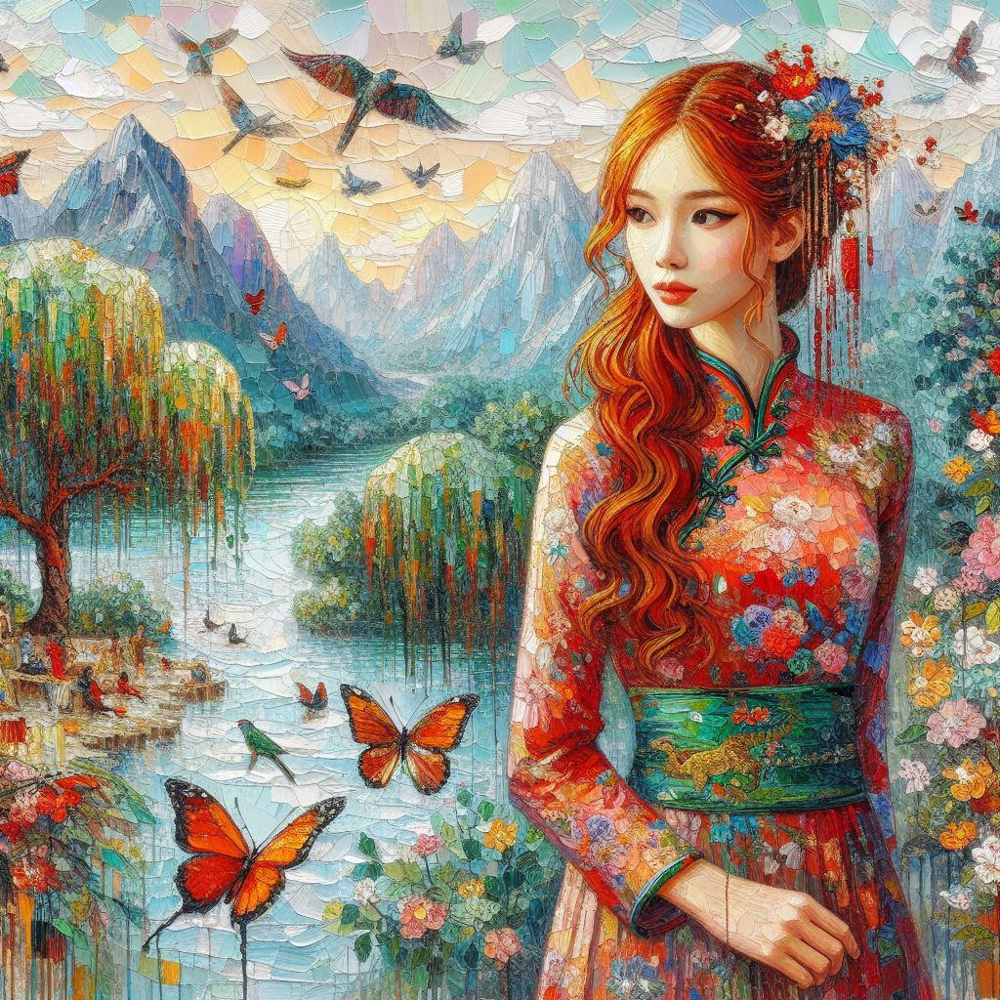
Schließlich kam das Schiff nach Amerika, wo Zanimia die Moderne von New York, Los Angeles, Rio de Janeiro und anderen Städten sah. Sie war beeindruckt von der Technologie, der Mode, dem Sport und der Unterhaltung dieser Orte. Sie besuchte Museen, Theater, Stadien und Freizeitparks. Sie machte Shopping, Partys, Surfen und andere Aktivitäten, die ihr Spaß machten.
Zanimia hatte eine wundervolle Zeit auf ihrer Weltreise. Sie sah so viele Dinge, lernte so viel und hatte so viel Spaß. Sie fühlte sich glücklich, erfüllt und dankbar. Sie dachte, dass sie alles hatte, was sie wollte.
Die nächsten Monate führten Zanimia durch die verschiedensten Länder und Kulturen. Sie besuchte die pulsierenden Metropolen Asiens, die mystischen Tempel Ägyptens und die farbenfrohen Märkte Südamerikas. Sie lernte neue Menschen kennen, probierte exotische Speisen und bewunderte atemberaubende Landschaften.
Je mehr sie jedoch sah und erlebte, desto mehr spürte Zanimia, dass es im Leben mehr gab als nur schöne Orte und neue Erfahrungen. Sie sehnte sich nach etwas Tieferem, nach einem Sinn im Leben.
Aber dann passierte etwas, das ihr Leben veränderte.
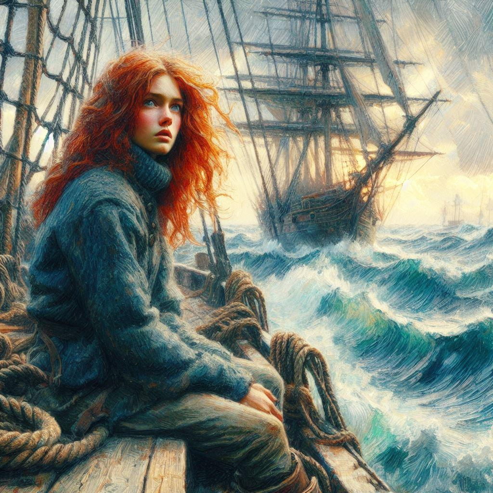
Eines Tages, als das Schiff in der Nähe von Hawaii war, brach ein heftiger Sturm aus. Das Schiff wurde von riesigen Wellen geschüttelt, und Zanimia verlor das Gleichgewicht. Sie fiel über Bord und wurde vom Meer verschluckt. Sie schrie um Hilfe, aber niemand hörte sie. Sie versuchte zu schwimmen, aber die Strömung war zu stark. Sie dachte, dass sie sterben würde.
Aber dann sah sie etwas, das ihr Hoffnung gab.
Sie sah eine kleine Insel in der Ferne. Sie schwamm mit aller Kraft in diese Richtung, und nach einer Weile erreichte sie das Ufer. Sie war erschöpft, aber am Leben. Sie fiel auf den Sand und atmete tief durch.
Sie sah sich um und stellte fest, dass die Insel sehr klein und unbewohnt war. Es gab nur einige Palmen, einige Blumen, einige Vögel und einige Fische. Es gab kein Haus, kein Boot, kein Telefonnetz, kein Internet, kein gar nichts. Sie war ganz allein.
Zanimia war verzweifelt. Sie wusste nicht, wie sie von dieser Insel entkommen konnte. Sie wusste nicht, ob jemand sie suchen würde. Sie wusste nicht, wie lange sie überleben könnte. Sie weinte bitterlich und rief nach Hilfe, aber niemand antwortete.
Sie dachte an all die Dinge, die sie auf ihrer Weltreise gesehen, gelernt und gemacht hatte. Sie dachte an all die Fotos, die sie gemacht hatte, und an das Tagebuch, das sie geschrieben hatte. Sie dachte an all die Freunde, die sie getroffen hatte, und an die Familie, die sie vermisste. Sie dachte an all die Träume, die sie noch hatte, und an die Ziele, die sie noch erreichen wollte.
Sie dachte, dass sie alles verloren hatte.
Aber dann passierte etwas, das ihr Leben veränderte
.
Eines Tages, als sie am Strand saß und in den Himmel schaute, sah sie einen Mann, der auf einem Ruderboot zu ihr kam. Er war ein alter Mann mit einem weißen Bart. Er trug eine orange Robe und eine Holzschale. Er lächelte sie an und sagte: "Hallo, mein Name ist Zenjio. Ich bin ein Zen-Meister, und ich lebe auf dieser Insel seit vielen Jahren. Ich habe dich beobachtet, seit du hier angekommen bist, und ich möchte dir helfen."
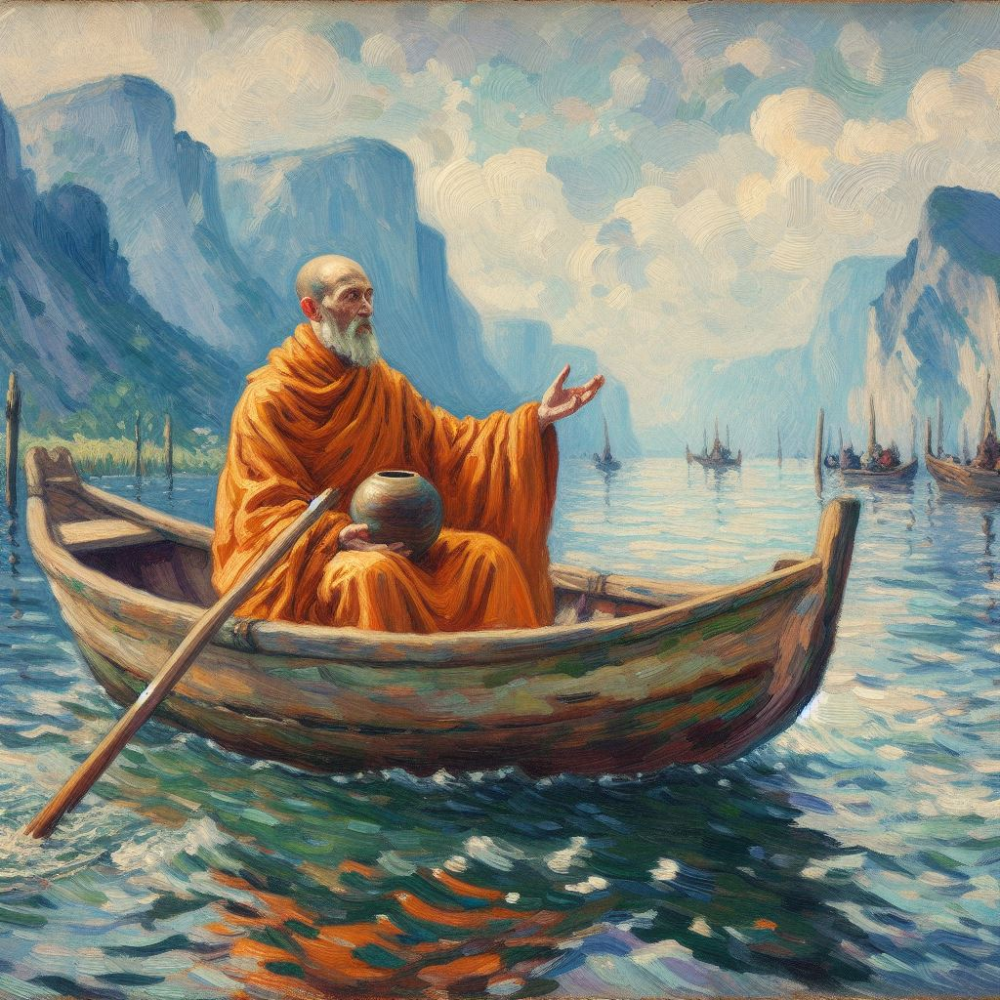
Zanimia war überrascht und verwirrt. Sie fragte ihn: "Wer sind Sie? Wie sind Sie hierhergekommen? Warum haben Sie sich nicht früher gezeigt? Wie können Sie mir helfen?"
Zenjio antwortete: "Ich bin hierhergekommen, um die Kunst des Zen zu praktizieren. Ich habe mich nicht früher gezeigt, weil ich wollte, dass du deine eigene Erfahrung machst. Ich kann dir helfen, indem ich dir die Weisheit des Zen lehre."
Zanimia fragte: "Was ist Zen? Was ist die Weisheit des Zen?"
Zenjio antwortete: "Zen ist eine Form des Buddhismus, die sich auf die direkte Erfahrung der Wirklichkeit konzentriert. Die Weisheit des Zen ist die Erkenntnis, dass alles leer ist, dass alles vergänglich ist, dass alles leidet, und dass alles eins ist."
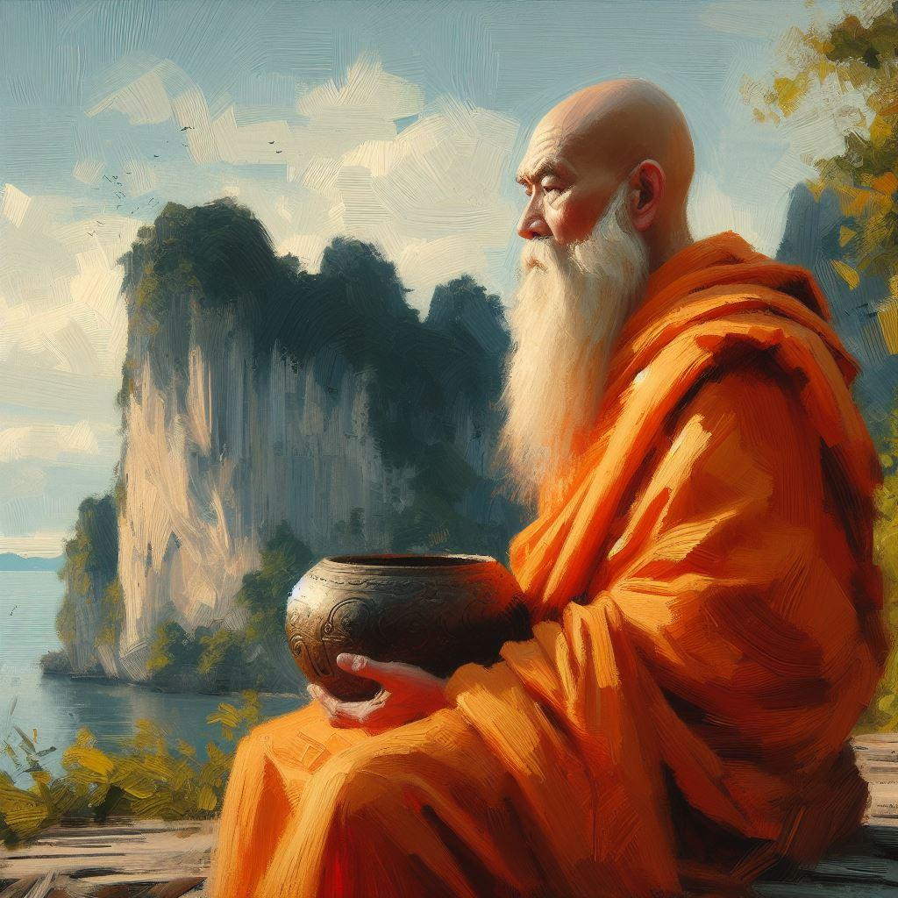
Zanimia fragte: "Was bedeutet das? Wie kann mir das helfen?"
Zenjio antwortete: "Das bedeutet, dass du dich nicht an die Dinge klammern sollst, die du hast oder die du nicht hast. Das bedeutet, dass du dich nicht an die Vergangenheit oder die Zukunft binden sollst, sondern im Hier und Jetzt leben sollst. Das bedeutet, dass du dich nicht von deinen Gefühlen oder Gedanken beherrschen lassen sollst, sondern sie beobachten und loslassen sollst. Das bedeutet, dass du dich nicht von deinem Ego oder deinem Ich trennen sollst, sondern dich mit allem und jedem verbunden fühlen sollst. Das kann dir helfen, Frieden, Freude und Freiheit zu finden, egal wo du bist oder was du tust."
Zanimia war neugierig und skeptisch. Sie sagte: "Das klingt sehr schön, aber auch sehr schwer. Wie kann ich das lernen? Wie kann ich das tun?"
Zenjio sagte: "Du kannst das lernen, indem du mir zuhörst und mir folgst. Du kannst das tun, indem du meditierst
und achtsam atmest, gehst, isst, schläfst, sprichst, schweigst, lachst, weinst, liebst, hasst, gibst, nimmst, machst, lässt, bist."
Zanimia sagte: "Das klingt sehr einfach, aber auch sehr kompliziert. Was ist, wenn ich es nicht schaffe? Was ist, wenn ich es falsch mache? Was ist, wenn ich es bereue?"
Zenjio sagte: "Du schaffst es, wenn du es versuchst. Du machst es nicht falsch, wenn du es akzeptierst. Du bereust es nicht, wenn du es schätzt."
Zanimia sagte: "Das klingt sehr beruhigend, aber auch sehr herausfordernd. Was ist, wenn ich Fragen habe? Was ist, wenn ich Zweifel habe? Was ist, wenn ich Angst habe?"
Zenjio sagte: "Du kannst mir Fragen stellen, wenn du neugierig bist. Du kannst Zweifel haben, wenn du ehrlich bist. Du kannst Angst haben, wenn du mutig bist."
Zanimia sagte: "Das klingt sehr interessant, aber auch sehr verwirrend. Was ist, wenn ich es verstehe? Was ist, wenn ich es erlebe? Was ist, wenn ich es bin?"
Zenjio sagte: "Dann hast du Zen gefunden. Dann hast du dich selbst gefunden. Dann hast du alles gefunden."
Zanimia sagte: "Das klingt sehr wunderbar, aber auch sehr mysteriös. Wie weiß ich, dass es wahr ist? Wie weiß ich, dass es real ist? Wie weiß ich…
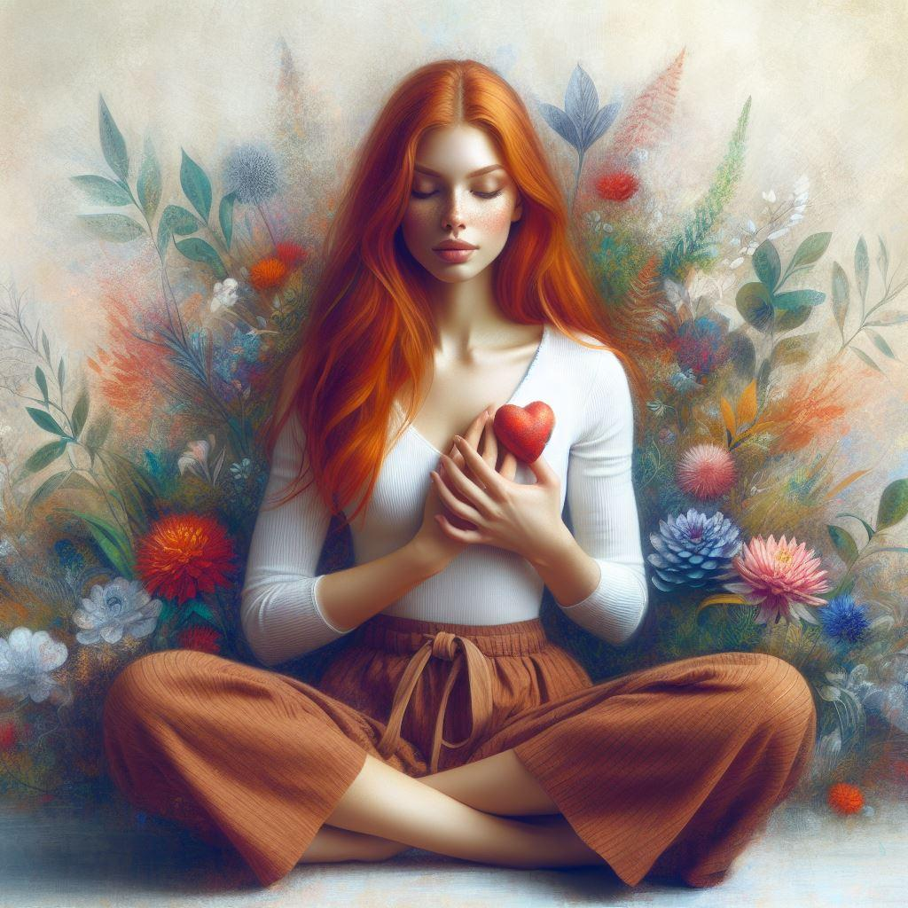
Zenjio sagte: "Sei achtsam und höre auf dein Herz, den alles, was du wissen sollst, ist in Dir.”
Zanimia beschloss, Zenjio zu vertrauen und ihm zu folgen. Sie begann, mit ihm zu meditieren und achtsam zu atmen, zu gehen, zu essen, zu schlafen, zu sprechen, zu schweigen, zu lachen, zu weinen, zu lieben, zu hassen, zu geben, zu nehmen, zu machen, zu lassen, zu sein.
Sie fand es anfangs sehr schwierig, aber nach und nach wurde es einfacher. Sie begann, die Dinge anders zu sehen, zu fühlen und zu verstehen. Sie begann, sich selbst und die Welt um sie herum zu akzeptieren, wie sie waren. Sie begann, Frieden, Freude und Freiheit zu finden, egal wo sie war oder was sie tat.
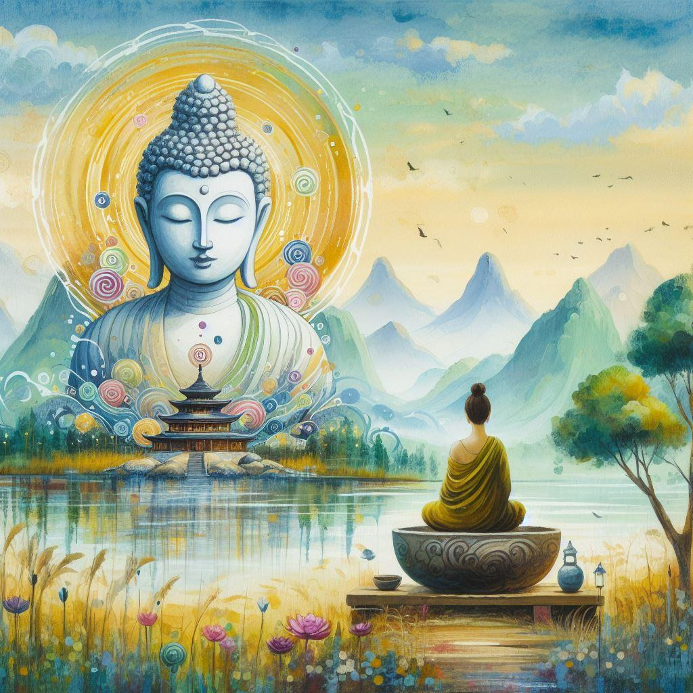
Zanimia setzte sich ihrem Meister gegenüber und schloss die Augen. In diesem Moment der Stille und Konzentration erlebte Zanimia eine tiefe Erleuchtung. Sie spürte, wie sich ihr Geist öffnete und sie mit dem Universum verbunden war. Sie erkannte, dass alles Leben miteinander verbunden ist und dass es im Leben darum geht, im Hier und Jetzt zu leben und die Schönheit des Alltags zu schätzen.
Im Zen-Buddhismus nennt man die Verbundenheit mit allem “Intersein”. Alles ist Eins.
Zenjio war sehr zufrieden mit Zanimias Fortschritt. Er lobte sie für ihre Anstrengung, ihre Ehrlichkeit und ihren Mut. Er erzählte ihr viele Geschichten, Rätsel, Witze und Gedichte, die ihr halfen, die Weisheit des Zen zu vertiefen. Er wurde ihr Lehrer, ihr Freund und ihr Vater. Er liebte sie wie seine eigene Tochter.
Von diesem Tag an war Zanimia eine andere Person. Sie war nicht mehr nur auf der Suche nach Abenteuer und neuen Erfahrungen, sondern auch nach innerer Zufriedenheit und Glück. Sie lernte, die kleinen Dinge im Leben zu schätzen und im Hier und Jetzt zu leben.
Eines Tages, als sie zusammen am Strand meditierten, sahen sie ein Schiff am Horizont. Es war ein Rettungsschiff, das nach Zanimia suchte. Sie hatten ihr Signal von ihrem Handy empfangen, das sie in ihrer Tasche hatte, als sie über Bord fiel. Sie hatten sie seit Monaten gesucht, und sie hatten die Hoffnung fast aufgegeben. Aber jetzt hatten sie sie endlich gefunden.
Zanimia war schockiert und glücklich zugleich. Sie konnte es nicht glauben, dass sie gerettet werden würde. Sie wollte zurück zu ihrer Familie, ihren Freunden und ihrem Leben. Sie wollte ihnen alles erzählen, was sie erlebt hatte. Sie wollte ihnen zeigen, wie sehr sie sich verändert hatte.
Aber sie wollte auch nicht Zenjio verlassen. Sie wollte bei ihm bleiben, und weiter Zen lernen. Sie wollte ihm danken, dass er ihr geholfen hatte. Sie wollte ihm sagen, wie sehr sie ihn liebte.
Sie wusste nicht, was sie tun sollte.
Zenjio sah ihr in die Augen und lächelte. Er sagte: "Zanimia, du hast Zen gefunden. Du hast dich selbst gefunden. Du hast alles gefunden. Du brauchst mich nicht mehr. Du kannst gehen, und dein Leben leben. Du kannst glücklich sein, egal wo du bist oder was du tust. Du kannst immer Zen sein, egal was passiert. Du kannst immer bei mir sein, egal wie weit du bist. Du kannst immer meine Tochter sein, egal wie alt du bist."
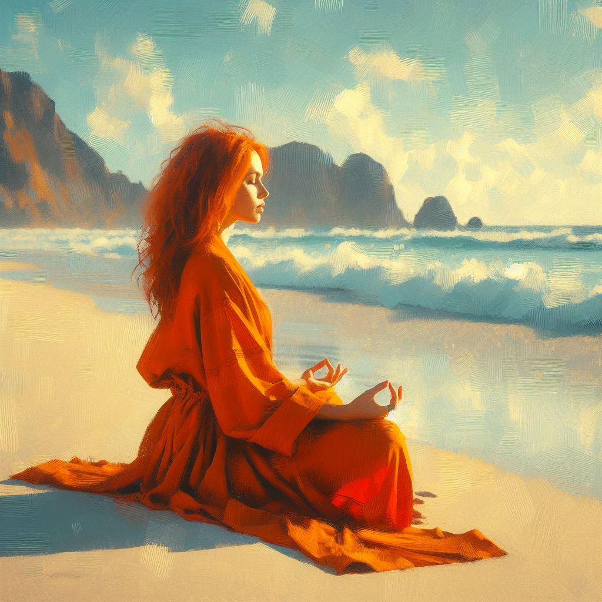
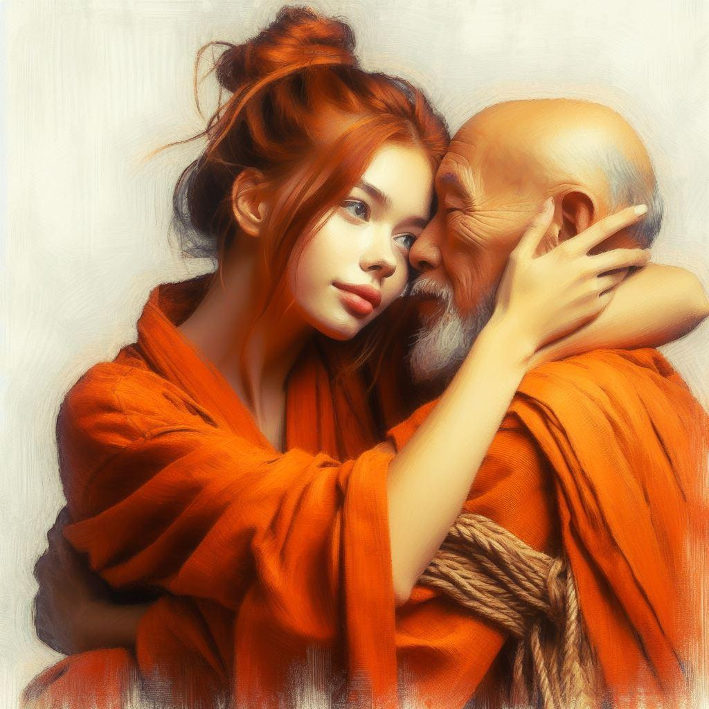
Zanimia weinte und umarmte ihn. Sie sagte: "Zenjio, du hast mir Zen gegeben. Du hast mir mich selbst gegeben. Du hast mir alles gegeben. Ich brauche dich immer. Ich will bei dir bleiben, und dein Leben teilen. Ich will dich glücklich machen, egal was du brauchst oder was du willst. Ich will immer Zen sein, egal was du sagst. Ich will immer bei dir sein, egal was du tust. Ich will immer deine Tochter sein, egal was du fühlst."
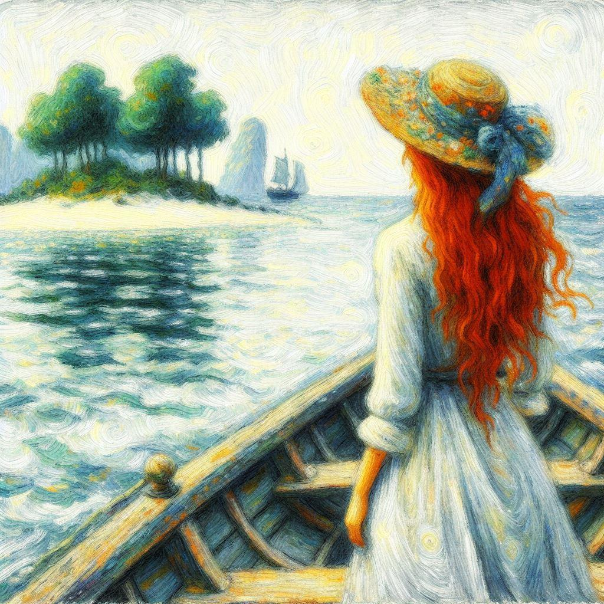
Zenjio weinte und küsste sie. Er sagte: "Zanimia, du bist Zen. Du bist du selbst. Du bist Intersein’. "
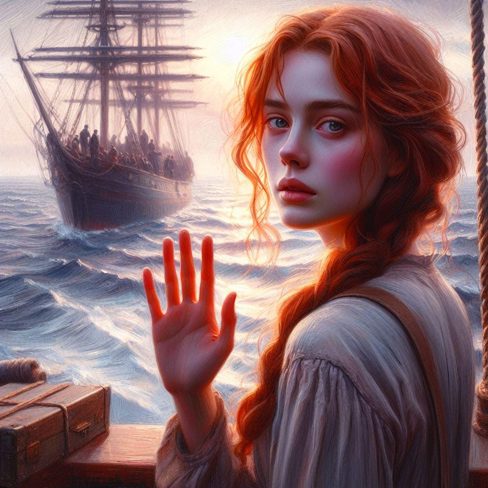
Zanimia beendete ihre Weltreise mit einem neuen Blick auf die Welt und einem tiefen inneren Frieden. Sie wusste, dass sie nie wieder die gleiche sein würde. Die Erfahrung, die sie auf der Insel gemacht hatte, hatte ihr gezeigt, dass es viel mehr gibt als nur materielle Dinge.
Zanimia kehrte nach Hause zurück und begann ein neues Leben. Sie studierte Philosophie, Psychologie und Zen und fand ihren Beruf als Coaching Lehrerin. Sie half anderen Menschen, ihren eigenen Weg zu finden und ein glückliches und erfülltes Leben zu führen.
Wir sind “Intersein”.
— ENDE —